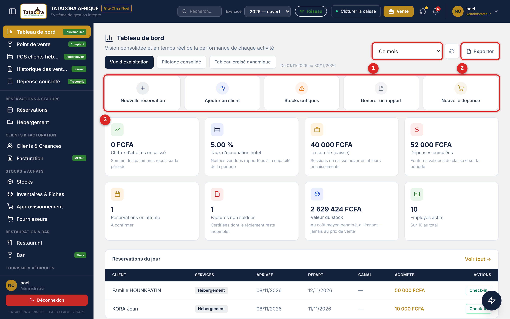
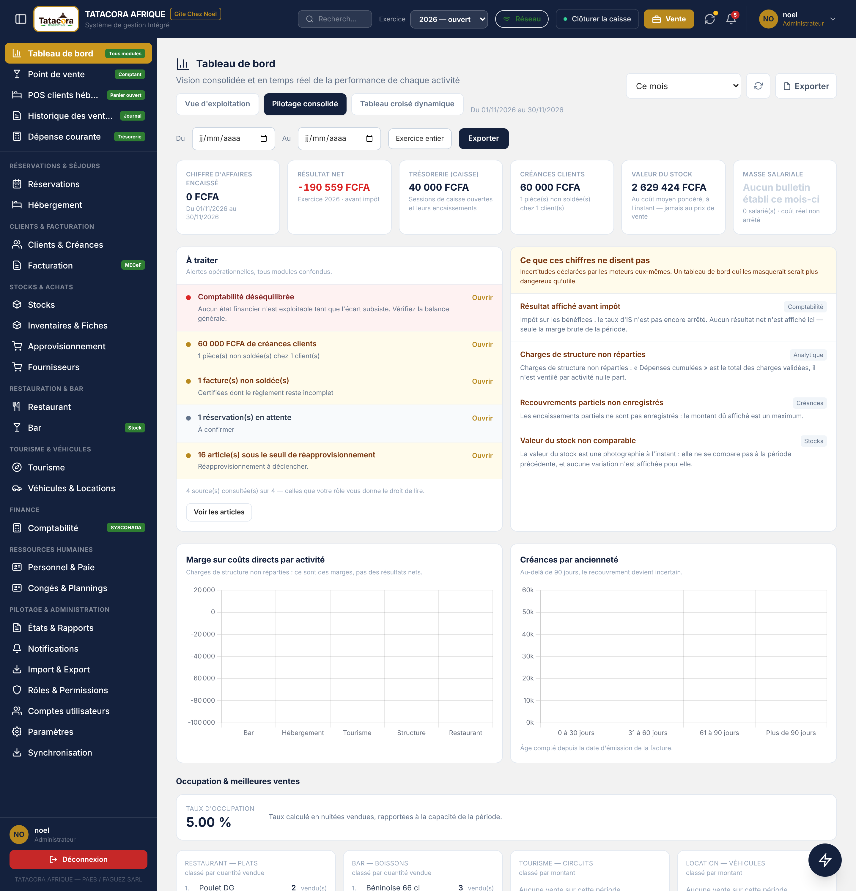
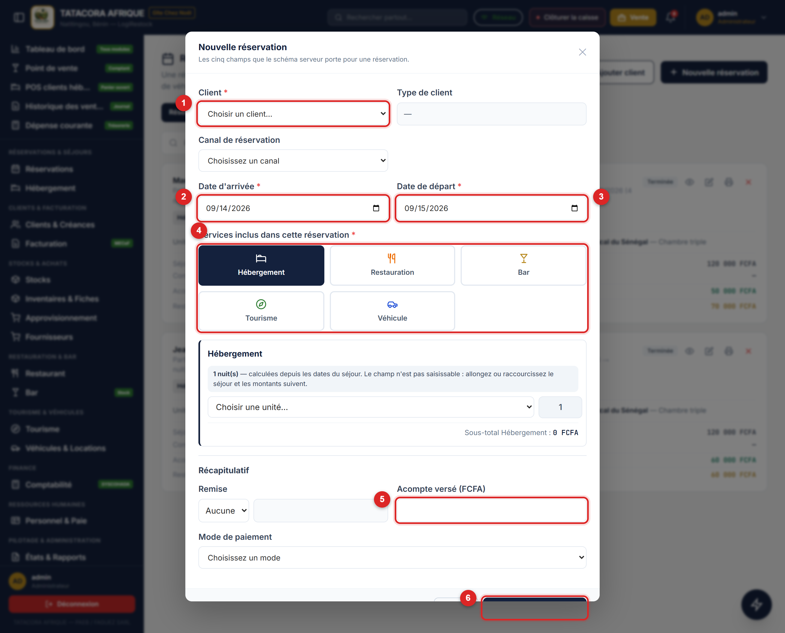
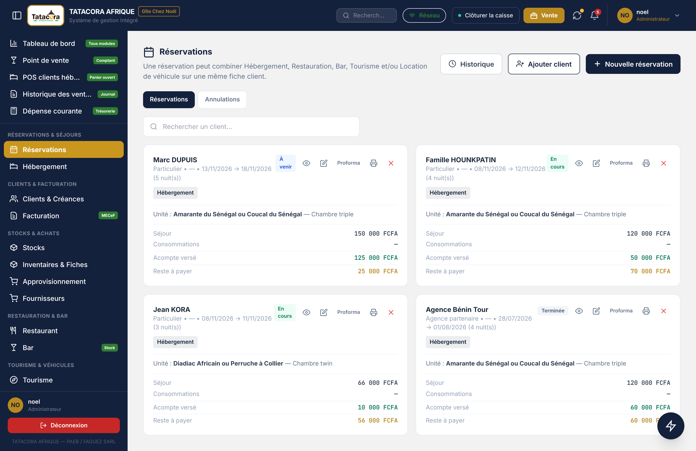
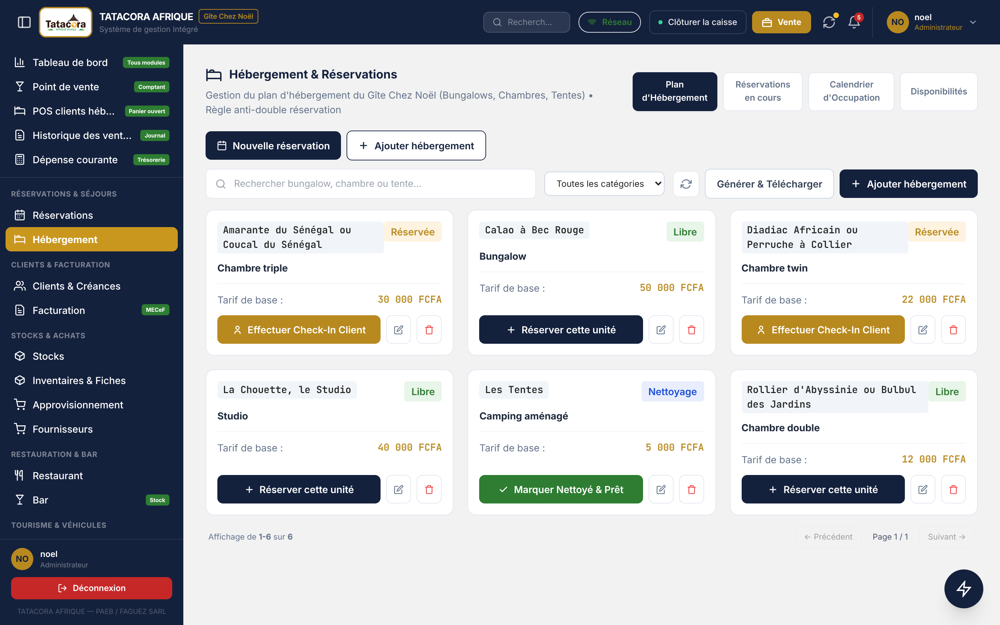

Le tableau de bord est l'écran d'accueil de la direction. Il agrège les modules d'exploitation sur la période que vous choisissez. Aucun chiffre n'y est saisi : tout est calculé depuis les pièces enregistrées dans les autres écrans.
Chemin Menu latéral ➔ Tableau de bord ℹ️ Information Les indicateurs, le résultat et les alertes ne sont montrés qu'aux profils qui ont le droit sur le module Tableau de bord (M11). Sans ce droit, l'écran d'accueil se limite à la consultation des écrans auxquels votre rôle donne accès.
| Onglet | Ce qu'il montre |
|---|---|
| Vue d'exploitation | Une bande de huit indicateurs : chiffre d'affaires encaissé, taux d'occupation hôtel, trésorerie (caisse), dépenses cumulées, réservations en attente, factures non soldées, valeur du stock, employés actifs. Dessous : le récapitulatif de la journée (arrivées, départs, nouvelles réservations, encaissé du jour), le bandeau rouge des alertes critiques de stock, les réservations du jour avec leurs boutons Check-in, Check-out et Payer, deux graphiques (chiffre d'affaires contre dépenses sur 3 mois, 6 mois ou 1 an ; réservations par activité), les statistiques de ventes par activité et la liste des chambres disponibles avec un bouton Effectuer Check-in. |
| Pilotage consolidé | La lecture de direction : six cartes (chiffre d'affaires encaissé, résultat net, trésorerie, créances clients, valeur du stock, masse salariale), le bloc À traiter, le bloc Ce que ces chiffres ne disent pas, la marge sur coûts directs par activité, les créances par ancienneté, l'occupation et les meilleures ventes (plats, boissons, circuits, véhicules), puis un bloc par module : réservations et hébergement, point de vente du jour, stocks, location de véhicules, tourisme et circuits, personnel et paie, clients et créances, comptabilité, dépense courante. |
| Tableau croisé dynamique | Un croisement libre de vos données pour répondre à une question que le tableau standard ne couvre pas : vous choisissez les Sources (Ventes, Dépenses, Réservations), les Lignes et les Colonnes (source, module, activité, produit, point de vente ou canal, mode de paiement, jour, mois) et la Mesure (montant, encaissé, quantité, nombre de lignes). Les factures en sont volontairement absentes : elles doubleraient chaque montant. Une dépense compte en négatif, donc le total est un solde. Pour une réservation, le montant retenu est son acompte. Exports PDF et Excel de la grille. |

Il rassemble les alertes opérationnelles, tous modules confondus, dans la limite des modules que votre rôle a le droit de lire : l'écran précise combien de sources ont été consultées sur le total. Les alertes possibles sont : comptabilité déséquilibrée, écritures en brouillon (elles n'entrent dans aucun état et bloqueront la clôture), montant des créances clients, factures non soldées, réservations en attente, articles sous le seuil de réapprovisionnement. Chaque ligne dit ce qu'il faut faire et porte un bouton qui ouvre l'écran concerné. Si une source n'a pas pu être lue, l'écran n'affirme rien, ni dans un sens ni dans l'autre.
C'est la particularité de LogiRestock, et elle mérite d'être comprise avant toute décision prise sur ces chiffres. Le logiciel y déclare lui-même les limites de ses propres calculs :
D'autres réserves se lisent directement dans les blocs concernés : le coût employeur est donné en fourchette (« X à Y »), faute de taux confirmé pour les risques professionnels ; le point de vente du jour signale les ventes qui ne décrémentent aucun stock ; le chiffre « masse salariale » dit « Aucun bulletin établi ce mois-ci » plutôt que d'afficher zéro.
⚠️ Attention Ne présentez jamais le chiffre Résultat net comme un résultat après impôt, ni le Coût employeur comme un montant définitif. Les deux sont annoncés incomplets à l'écran. Reprenez la mention telle qu'elle est écrite quand vous transmettez ces chiffres à un tiers.Le poste calcule son tableau de bord à partir de sa propre base, avec les mêmes onglets, les mêmes périodes et les mêmes exports (PDF, ou tableur au format CSV). Il fonctionne donc sans internet. Ce qu'il affiche est ce que ce poste connaît : ses ventes, ses dépenses et sa caisse, plus le catalogue, les clients et les réservations reçus des autres postes. Les ventes et les caisses des autres postes se consultent sur le serveur (web). Pour relire la base après une synchronisation, faites un clic droit puis Actualiser.
Une réservation au Gîte n'est pas seulement une chambre : elle peut combiner Hébergement, Restauration, Bar, Tourisme et Location de véhicule sur une même fiche client. Ce chapitre décrit la prise de réservation, son suivi, son annulation et le plan d'hébergement.

Après l'enregistrement, la fenêtre Réservation enregistrée demande « Voulez-vous imprimer la facture de cette réservation ? » et propose deux boutons : Imprimer la facture ouvre le document du séjour, prêt à imprimer ou à enregistrer en PDF ; Plus tard ferme simplement la fenêtre. Ce même document s'imprime à tout moment depuis l'icône d'imprimante de la carte de la réservation.
⚠️ Attention Malgré le libellé du bouton, le papier porte le titre « CONFIRMATION DE RÉSERVATION » et la mention « Ce document ne vaut pas facture » : il ne porte ni numéro fiscal ni cachet. La vraie facture du séjour est émise à la clôture du panier du client hébergé (chapitre 6). Si vous voulez remettre au client un devis avant son arrivée, utilisez la facture proforma : le bouton Proforma de la carte de la réservation ouvre l'écran des proformas déjà prérempli (voir le chapitre consacré à la facture proforma).L'écran Réservations a deux onglets, Réservations et Annulations, un champ Rechercher un client… et un bouton Historique. Il présente une carte par séjour. Chaque carte porte le type de client, le canal, les dates, le nombre de nuits, une pastille d'état, les services retenus en pastilles de couleur, l'unité occupée, puis quatre lignes de montants :
Les icônes en haut de la carte ouvrent, dans l'ordre : le Détail (référence interne, statut enregistré, état du jour déduit des dates, date de création), Modifier (la fenêtre « Modifier la réservation »), Proforma, l'impression de la confirmation et l'annulation (voir 4.6). Une icône absente signale un droit qui manque.
ℹ️ Information Deux lignes de montants distinctes plutôt qu'un total unique, c'est délibéré : « Séjour 108 000 F » puis « Consommations 22 100 F » dit ce qui s'est réellement passé. Un montant unique laisserait croire que la nuitée a changé de prix.
Le panneau Historique des réservations filtre par recherche (client, canal ou numéro), par période et par état (Tous les états, À venir, En cours, Terminées, Annulées), avec un bouton Réinitialiser. Il affiche les indicateurs correspondants — réservations, à venir, en cours, nuitées, chiffre d'affaires, reste à encaisser — puis un tableau (client, séjour, nuits, unités, services, total, reste dû, état). La liste est limitée aux 200 premières lignes : affinez les filtres au besoin. Le bouton Exporter produit exactement la liste affichée, filtres compris.
L'état d'un séjour n'est pas saisi : il se déduit des dates, à la date du jour.
| État | Comment il est obtenu |
|---|---|
| À venir | La date d'arrivée est postérieure à aujourd'hui. |
| En cours | Aujourd'hui est compris entre l'arrivée et le départ. |
| Terminée | La date de départ est passée. |
| Annulée | Seul état réellement enregistré : quelqu'un a annulé la réservation. |
L'écran s'intitule Hébergement & Réservations et compte quatre onglets, avec en tête une recherche (Rechercher bungalow, chambre ou tente…), un filtre par catégorie et les boutons Actualiser, Ajouter hébergement (pour les profils qui ont le droit d'écrire) et Nouvelle réservation.
Le bouton Nouvelle réservation de cet écran ouvre la Réservation rapide : client, arrivée, départ, nombre de nuits et montant de l'hébergement, puis Enregistrer et compléter plus tard. La réservation est créée avec l'hébergement seul ; la restauration, le bar, le tourisme et le véhicule s'ajoutent ensuite dans l'écran Réservations.
⚠️ Attention Le taux d'occupation du calendrier est présenté comme estimé, et il faut le lire ainsi. Ne l'utilisez pas pour décider d'une sur-réservation : c'est le plan d'hébergement, unité par unité, qui fait foi sur la disponibilité réelle. ✅ Astuce Le statut d'une unité n'est jamais saisi : il est recalculé depuis les réservations. Si une chambre apparaît Réservée à tort, la correction se fait sur la réservation qui la bloque, jamais sur la fiche de l'unité.
Une réservation ne s'efface jamais : elle s'annule, et elle reste consultable. Cliquez sur la croix rouge de sa carte (ou sur Annuler la réservation dans sa fiche). La fenêtre Annuler cette réservation montre le montant total, l'acompte déjà encaissé et le délai avant la prestation, puis vous demande :
Cliquez sur Annuler la réservation pour confirmer : l'unité redevient disponible immédiatement. L'onglet Annulations garde la trace de chacune — total, taux, commission retenue, montant remboursé, date et auteur. Une réservation déjà annulée ne peut pas l'être une seconde fois.
Le poste offre les mêmes gestes, hors ligne : créer, modifier et annuler une réservation, check-in, check-out, réservation rapide, disponibilités, imprimer la confirmation. La réservation saisie sur un poste est envoyée au serveur à la synchronisation, puis redescend sur les autres postes ; une petite pastille sur la carte dit si votre saisie est déjà partie ou si le serveur l'a refusée, avec le motif. Le double-booking est contrôlé sur ce que le poste connaît : après une longue coupure, synchronisez avant de promettre une chambre à un client, afin de voir les réservations prises sur les autres postes.